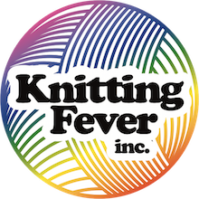

where beautiful
things begin
Ancient Arts
Arucania
Juniper Moon

- Beatrix
- Cumulus
- Findley
- Findley Dappled - lace
- Herriot Fine
- Neve
- Patagonia
- Pollock
- Santa Cruz
- Stargazer
- Summer Solstice
Midknit Cravings
Ella Rae
- Denim DK
- Eco Tweed
- Lace Merino Aran
- Lace Merino - sport
- Lace Merino - DK
- Marmel
- Rustic Aran
- Rustic Lace Quad
- Rustic Silk
- Sequinicity
- Silky Kid

KFI
- Furreal Jumbo
- Indulgence Sport Hand Paint
- Indulgence Minis
- Jumbo Furreal
- Painted Desert
- Painted Sky
- Teenie Weenie Wool
Gedifra
- Cotone
- Creativo
- Cuor di Merino
- One 4 Two
- Perulana
Mirasol
Queensland Collection
Louisa Harding
- Giardino
- Luci
- Pitturissimo
- Scintille
Sugar Bush
Drops
- Air
- Alpaca
- Andes
- Baby Alpaca Silk
- Baby Merino
- Fabel Sock
- Kidsilk
- Lace
- Muskat
- Sky
Lamana
Sandnes Garn
- Comfort Chunky
- Comfort
- Comfort Sock
- Millefiori Light
- Remix Light
- Providence
- Sesame
- Skye
- Sox
- Summer Silk
- Ultra Alpaca Chunky
- Ultra Alpaca
- Vintage Chunky
- Vintage DK
- Vintage Worsted

Diamond Luxury
- Azteco
- Impression
- Pima Lino Lace
- Soxy Lady
- Tip Toe
- Tradition Chunky
- Tradition
- Winter Flower
Diamond Select
- Footsie
- Hero #1
- Indus Valley
- Jewel Metallic
- Olivia
Little Darlings
NOVA
Malabrigo
Yarns From Heaven
Sirdar
- Baby Crofter DK - Fair Isle Effect
- Crofter DK - Fair Isle Effect
- Dapple DK
- Snuggly 100% Cotton
- Snuggly 3-ply
- Snuggly 4-ply
- Snuggly Bubbly
- Snuggly DK
- Snuggly Rascal
- Snuggly Snowflake DK
Universal Yarns
- Bella Cash
- Bella Chenille
- Deluxe Worsted Tweed Superwash
- Fibra Natura - Java
- Major
- Uptown Worsted
- Marble DK
- Supersoft Baby Shimmer DK
Hedgehog
- Alpaca Drift
- Alpaca Merino Chunky
- Alpaca Merino DK
- Alpaca Merino Fine
- Alpaca Merino Worsted
- Eco Tweed DK
- Estelle Chunky
- Hudson
- Magic Shawl
- Rainbow Autumn
- Sock Twins
- Sudz
- Superwash Merino DK
- Urth Merino Sock
- Uneek Chunky
Cascade
- Anthem
- Avalon
- Cherub Aran
- Cherub Chunky
- Heritage Wave Socks
- Ultra Pima
Classic Elite
Lang
- Super Soxx with Cashmere
- Mille Colori Superkid
King Cole
- Baby Glitz
- Big Value Chunky
- Big Value DK 50g
Pro Lana
Rico
- Superba Susu
- Superba Supi Dupi
The Loving Path
Noro
- Akari
- Kiri
- Kumo
- Sonata
- Tennen
Lykke Needles
- Circulars 40cm, 60cm, 80cm
- DPNS
- 5" interchangeable tips circular set (12prs)
- 3.5" interchangeable tips circular set (9prs)
- Small mm 6in DPN set (8 sizes)
- Large mm 6in DPN set (8 sizes)
- Straight Needles
Knitters' Pride
- Basix Circulars - 6.5, 7.0, 8.0, 9.0, 10.0, 12.0 & 15.0mm (60, 80 & 100cms)
- Basix Jumbos (100cm) - 25mm
- Basix DPN's (8inch) - 5.0, 5.5, 6.0, 6.5, 7.0, 8.0, 9.0, 10.0mm
- Zing DPN's (6inch) - 2.0, 2.25, 2.5, 2.75, 3.0, 3.25, 3.5, 3.75, 4.0mm
- Zing sets - Interchangeables & DPN's
- Nova Cubix
- Dreamz - DPN's
- Dreamz - circulars
- Dreamz - straights
- Karbonz DPN's (6inch) - 2.0, 2.25, 2.5, 2.75, 3.0, 3.25, 3.5, 3.75, 4.0mm
Chiao Goo
- Red Line Circulars - 9in(23cm), 12in(30cm), 16in(40cm), 24in(60cm), 32in(80cm), 40in(100cm)
Addi
- Addi Turbo Rockets
- Flexi-Flips
West Yorkshire Spinners
Buttons and Notions
- Eucalan - all varieties
- handmade beaded stitch markers
- handcrafted bags (small projects, notions and dpn holders)
- metal buttons
- notions cases
- pewter clasps
- plastic buttons
- stitch counters
- toggles
- wood buttons
Crosstitching
- John James needles
- Q-snap frames
- full line of DMC cotton floss
- pre-cut Aida cloth in various counts, sizes & colours
Magazines and Books
- Asst of current books including Stephanie Pearl-McPhee
- Interweave Knits
- Knit Scene
- Qty. of discontinued magazines and books
Miscellaneous
- Faux fur pom poms
- Knitting looms
- Knitters Pride Magnum Pattern Holders
- Sock blockers
- Southmaid Crochet Thread #10
- Swifts & Wool Winders
- Wooden Yarn Bowls